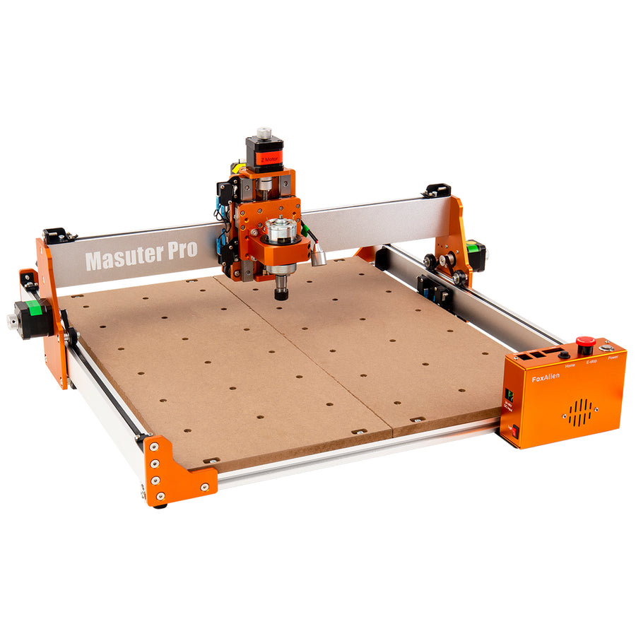

Step 4. CNC the Maker¶
"Monitor the CNC machine as it operates all the motors following the instructions (GCODE) sent to the machine"

What is this step?¶
This is it! The "making" part. This page covers the physical setup of the FoxAlien Masuter Pro machine. This includes clamping your material to the machine's bed, installing the correct cutting bit, and safely operating the machine.
Your G-Code tells the CNC what to do, but this step is you setting up the machine for success. Pay close attention to detail here. Safety is the number one priority.
Safety FIRST!
Always wear protective safety glasses and hearing protection. Keep track of all 10 of your digits! Tie up long hair, draw strings on hoodies and anything that can dangle onto your material or spoilboard Operating the machine is when accidents can hurt and damage YOU!
Workflow Steps¶
-
Put on your safety glasses and hearing protection. Check that nothing could possibly fall into the CNC spindle such as long hair or strings from your hoodie.
-
Put on your safety glasses and hearing protection. Check that nothing could possibly fall into the CNC spindle such as long hair or strings from your hoodie.
- Turn on the CNC spindle (the router).
- In UGS, click the "Send" (or "Play") button.
- The machine will now start moving and carving your design.
- Power down and clean up your work area.
Do not walk away!
Watch the machine, especially for the first few minutes, to make sure everything is working as expected.
Watch and listen for faults
- If your material moves in any way, press the EMERGENCY BUTTON now!
- If the CNC machine makes weird sounds or vibrations, press the EMERGENCY BUTTON now!